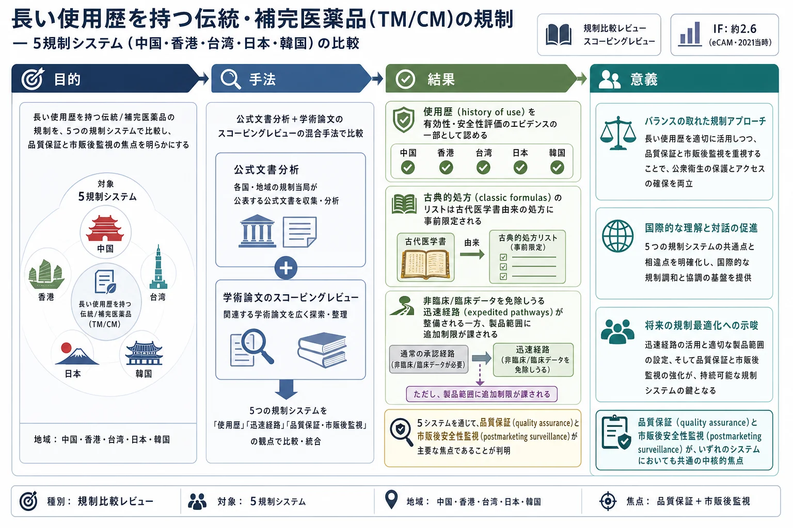

長い使用歴を持つ伝統・補完医薬品(TM/CM)の規制 — 5規制システム（中国・香港・台湾・日本・韓国）の比較

<!-- 方針: 規制比較レビューの忠実訳。原文構成に沿う。「> 補足:」は訳者注。 -->
書誌情報
- 原題: Advancing the Regulation of Traditional and Complementary Medicine Products: A Comparison of Five Regulatory Systems on Traditional Medicines with a Long History of Use
- 著者: Zuanji Liang, Hao Hu, Junlei Li, Dongning Yao, Yitao Wang（責任著者）, Carolina Oi Lam Ung（責任著者）（マカオ大学 中華医薬研究院／中薬質量研究国家重点実験室, マカオ）
- 掲載: Evidence-Based Complementary and Alternative Medicine 2021, Article ID 5833945. https://doi.org/10.1155/2021/5833945（オープンアクセス）
- インパクトファクター: 約2.6（eCAM・2021年当時。※本誌は後年にJCR収載外となった）
補足: 本稿は分析QCでなく、伝統/補完医薬品(TM/CM)をどう規制するかを東アジア5法域（中国・香港・台湾・日本・韓国）で比較した規制レビュー。「長い使用歴」をエビデンスとしてどう扱うか、古典処方リスト・迅速承認経路・品質管理・市販後監視の各観点で対比する。当サイトの規制系解説（EU/米/加/日の規制、桑枝の三結合体系）を東アジア視点で補完する。
抄録（Abstract）
背景（Background）
Traditional medicine (TM) および complementary medicine (CM) 製品の品質、安全性、有効性を確保し促進するための適切な規制システムは、公衆衛生だけでなく経済成長にとっても極めて重要である。長い使用歴を持つことを特徴とするTM/CM製品の規制アプローチおよび評価基準はまだ発展途上である。本研究は、長い使用歴を持つTM/CM製品に対する既存の規制アプローチを調査し比較することを目的とする。
方法（Method）
本研究では、公式ウェブサイトから得られた公式文書および法的文書の文書分析（documentary analysis）と、China、Hong Kong、Taiwan、Japan、KoreaにおけるTM/CM製品の規制システムに関する科学的データベース内の学術論文のスコーピングレビューを組み合わせた混合アプローチを採用し、比較を行った。
結果（Results）
登録目的において、5つの規制システムすべてが、長い使用歴を持つTM/CM製品の安全性と有効性を評価する際、エビデンスの全体像（totality of evidence）の一部として使用歴（history of use）を認めていた。一般に、古典的処方（classic formulas）のリストは事前に定義されており、処方された古代の医学教科書のリストで推奨されている処方に限定されている。通常、迅速経路（expedited pathways）が整備されており、非臨床研究および臨床研究の科学的データが免除される場合がある。同時に、製品範囲に関する追加の制限が、規制における包括的なアプローチを構成している。本研究で調査された規制スキーム全体において、品質保証と市販後安全性監視（postmarketing safety surveillance）が主な焦点であることが判明した。
結論（Conclusion）
本研究で調査された規制システムは、歴史的使用に基づいて安全性と有効性が妥当であると仮定し、長い使用歴を特徴とするTM/CM製品に対して、より緩やかな登録要件を許容している。これらの製品の安全性と有効性を考慮すると、規制基準は品質管理および市販後監視のための技術的要件を強調すべきである。
1. はじめに（Introduction）
Traditional medicine (TM) および complementary medicine (CM) は、主流の医療システムに統合され得る医療行為のアプローチを指す[1]。TM/CMは主要な疾患の治療、慢性疾患の予防と管理、および高齢化社会の健康ニーズを満たす上で重要な役割を果たしている[2, 3]。
世界的には、世界人口の80%以上が何らかの形のTM/CM製品を使用しており、その傾向は上昇している[4]。「自然またはホリスティック」なアプローチへの嗜好、自己管理における高い自律性への欲求、そして絶対的な安全性という認識が、TM/CM製品の使用増加に寄与している[5, 6]。がん、非感染性疾患[7, 8]、その他の重篤な疾患[9–12]などの疾患管理におけるTM/CM製品の有益性を示すエビデンスが増加している。重症急性呼吸器症候群（SARS）[13]やコロナウイルス感染症（COVID-19）[14–16]などのパンデミックへの対処、ユニバーサル・ヘルス・カバレッジの達成[17, 18]、医療サービス全体の質向上[19]におけるTM/CM製品の可能性は、効果的な規制措置を通じて公衆衛生を確保することの重要性を裏付けている[20, 21]。
TM/CM製品は経済的にも重要である。世界の市場規模は2050年までに年率7%で成長し、5兆米ドルに達すると予測されている[22]。アジア太平洋地域、米国、英国、カナダなどで多額の支出が報告されている[23–27]。Australiaでは、CM製品は39.7億米ドルの急速に成長している産業であり、148の製造拠点、2,852人の直接雇用、3億1,100万米ドルの経済価値を特徴としている[28]。Chinaでは、伝統医薬産業の総生産額は1,224億米ドルに達し、医薬品産業全体の総生産額のほぼ3分の1を占め、国家経済成長の推進力となっている[29]。
TM/CM製品の規制措置のレベルと形式は、安全性と有効性を正当化する上での歴史的使用の関連性とエビデンスの全体像（totality of evidence）の認識に基づいている。例えば、AustraliaのTherapeutic Goods Administrationは、薬局方や伝統的医学文献に記載されているCM製品を承認する際に歴史的使用の価値を認めている[30]。欧州医薬品庁（European Medicines Agency）は、欧州連合（EU）内で30年以上の歴史的使用が証明されている伝統的生薬製剤（TM products）に対して簡素化された承認制度を認めている[31]。Chinaでは、何百年あるいは何千年もの間臨床で使用されてきた「中国伝統医学の古典的処方（classic Chinese medicine formulas）」について、臨床安全データの必要性が免除される場合がある[29, 32]。
しかし、WHOによると、2018年時点でTM/CM製品に関する法律や規制があると報告した加盟国は124カ国（64%）に過ぎず、これらの製品の安全性と有効性を評価する際のエビデンスの全体像を評価するための標準的なアプローチはまだ存在しない[3]。最近、長い使用歴を特徴とする「classic formula」の概念が、ChinaやMacaoなどの国・地域においてTM/CMの規制枠組みの新しい規制カテゴリーとして導入された。しかし、長い使用歴を持つTM/CM製品の規制基準を国をまたいで体系的に分析した研究はほとんどない。本研究は、長い使用歴を持つTM/CM製品に対するリスクベースのアプローチを採用している既存の規制アプローチを調査・比較することを目的とする。
2. 材料と方法（Materials and Methods）
2.1. 研究アプローチ
本研究では、(1) 問題またはニーズの特定、(2) 選択肢の策定、(3) 選択された選択肢の採用、(4) 選択肢の実施、(5) 実施された選択肢の結果評価、という段階的アプローチを検討した[33]。まず、長い使用歴を持つTM/CM製品に適用可能な規制要件の策定というニーズを決定した。その後、規制に関する文献を参照し、規制システムの比較を行った。
2.2. 研究対象
長い使用歴を持つTM/CM製品の登録プロセスをすでに確立している国/地域として、東アジアで同じTCM起源と規制上の関心を共有する、China、Hong Kong、Taiwan、Korea、Japanを比較対象として選択した。伝統中国医学（TCM）は約3,000年前に中国で誕生した[35]。日本には中国文化とともに伝わり[36]、韓国には6世紀初頭に仏教とともに伝わった[37]。19世紀に西洋文化が導入される前は、TCMがあらゆる疾患の治療に使用される主要な医療システムであった[38]。『金匱要略』に記録されている射干麻黄湯（Shegan Mahuang Decoction）[39]、『脾胃論』に記録されている補中益気湯（Bu Zhong Yi Qi Decoction / Hochuekkito）[40–42]、『傷寒論』に記録されている麻黄湯（Mahuang Decoction / Maoto）[43, 44]などは現在でも使用されている。
2.3. データ収集と分析
公式ウェブサイトおよび学術データベース（Google Scholar, PubMed, Web of Science, CNKI）を用いて公式文書および学術論文の検索を行った。検索キーワードは「(herbal medicine OR traditional medicine OR traditional Chinese medicine*) AND (regulation OR registration) AND (China OR Japan OR Korea OR Hong Kong OR Taiwan)」とした。収集したデータから、全体的な規制アプローチ、製品処方のリスト、登録の主な要件と制限、品質管理要件、および市販後監視に関する情報を抽出し比較した。
Table 1: The official websites and major responsibilities of the drug regulatory authorities.
（公式ウェブサイトと薬物規制当局の主な責務）
| Country/region | Regulatory authority | Major responsibilities |
|---|---|---|
| China | National Medical Products Administration (NMPA) (https://www.nmpa.gov.cn) | 医薬品（伝統中国医学（TCMs）を含む）の安全性を監督し、医薬品、医療機器、化粧品の登録を規制し、規格管理を引き受ける。 |
| State Administration of Traditional Chinese Medicine (http://www.satcm.gov.cn) | TCMsの規制と開発に関する全体的な責任を負う。 | |
| Hong Kong | Chinese Medicine Regulatory Office, Department of Health (https://www.cmro.gov.hk) | 行政的支援を提供し、規制措置を実施する。 |
| The Chinese Medicine Council of Hong Kong (https://www.cmchk.org.hk) | 中医薬の規制措置を策定し実施する。 | |
| Taiwan | Department of Chinese Medicine and Pharmacy, Ministry of Health and Welfare (https://dep.mohw.gov.tw) | TCMおよびその関連人材、医療施設、品質向上の管理を計画し推進する。 |
| Japan | Ministry of Health, Labour and Welfare (https://www.mhlw.go.jp/english/) | 社会保障および公衆衛生の向上と増進に関する全体的な責任を負う。 |
| Pharmaceuticals and Medical Devices Agency (https://www.pmda.go.jp/english/index.html) | 医薬品の製造販売承認申請の科学的審査を行い、市販後安全性を監視する。 | |
| Korea | Ministry of Health and Welfare (http://www.mohw.go.kr/eng/index.jsp) | 保健および福祉に関連する事務と政策を調整し監督する。 |
| Ministry of Food and Drug Safety (https://www.mfds.go.kr/eng/index.do) | 食品、医薬品、医療機器、化粧品を規制する。 |
3. 結果（Results）
3.1. 長い使用歴を持つTM/CM製品に対する全体的な規制アプローチ
各国におけるリスクベースアプローチの違いにより、長い使用歴を特徴とするTM/CM製品に関連する定義、範囲、および規制アプローチには大きなばらつきがある。Chinaのclassic Chinese medicine formulation (CCMF)、Hong Kongのestablished medicine、Taiwanのstandard formulation of Chinese medicine (SFCM)、JapanのKampo medicine、Koreaのherbal drugにおける規制枠組みの概要を以下に説明し、Table 2にまとめる。
補足: CCMFは「古代經典名方中藥複方製劑」、SFCMは「基準方劑」、Established medicineは「固有藥」、Kampo medicineは「漢方製劑」に対応する。
3.1.1. China
Chinaでは、TM/CM製品は主に4つの登録カテゴリー、すなわち、innovative Chinese medicines、modified new Chinese medicines、generic Chinese medicines (same name and formulations)、およびCCMFに分類される[46]。本研究の対象であるCCMFは、長い使用歴を特徴とし、エビデンスの全体像を考慮した評価の対象となる。2017年、NMPA（当時はChina Food and Drug Administration）は「古代経典名方中薬複方製剤の簡素化登録・承認管理に関する規定（案）」を発表した[52]。この文書におけるCCMFは、1911年以前の古代の古典的中国医学書に記載されている処方を指し、1985年の「Provisions for Drug Registration（薬品登録管理弁法）」[53]施行以来、China国内の他の医薬品と同様の厳格な審査、規制モデル、および承認基準に適合してきた。これに伴い、CCMFに対する簡素化された登録および承認の取り決めが提案された。CCMFはすでに何百年もの臨床応用によってその臨床効果が実証されているため、現代の化学合成薬のように有効性と安全性を実証するための臨床試験は適用されない。
3.1.2. Taiwan
Taiwanの中医薬製品管理は、特性と歴史的使用の実績によって区別される2つの登録カテゴリーを採用している。古典的なTCM文献に記載されている伝統的処方、またはSFCMとして知られる製品については、「Regulations for Registration of Medicinal Products」に基づき、臨床的有効性・安全性データを提出せずに登録およびライセンス承認が得られる[47, 54]。SFCMは、中華中医薬学会が広く確立された出版物や古代の古典医学書から選定したもので、剤形と処方内容が統一的に標準化されている。これらの確立された出版物[47]には、『医宗金鑑（Yi Zong Jin Jian）』、『医方集解（Yi Fang Ji Jie）』、『本草綱目（Ben Cao Gang Mu）』などの一連の中医薬文献が含まれる。ただし、確立された出版物に記載されているTCM製品を新しい適応症や新しい投与経路で申請する場合は、さらなる評価のために臨床的有効性に関するデータが要求される。確立された出版物に記載されていないTCM製品については、登録申請時に安全性、有効性、品質に関する包括的な文書が必要となる。
3.1.3. Hong Kong
Chinese Medicine Ordinance（中薬条例）に基づき、広義の「proprietary Chinese medicine（中成薬）」（病気や症状の管理、または人体機能状態の調整に使用されることが知られているか主張されている、中国生薬のみで構成され最終製剤形態に調製された特許製品）の下に、3つのカテゴリー（established medicine、nonestablished medicine、new medicine）が存在する[48]。長い使用歴を特徴とする「established medicine（固有薬）」は、中医薬文献に由来する古代の処方、または中華人民共和国薬局方（PRC Pharmacopoeia）やPRCのNational Drug Standardsに詳細に記録されているものを指す[48]。「established medicine」には、Group I、Group II、Group IIIの3段階の規制アプローチがある。Group Iの「established medicine」については、登録申請時に安全性、有効性、品質を示す基本文書のみが必要とされる。Group IIの「established medicine」には、リアルタイム安定性試験などの安全性と品質に関する追加の証明が必要であり、Group IIIの「established medicine」の申請には、主要薬力学（principal pharmacodynamic）試験や臨床試験を含む包括的な文書が適用される。
3.1.4. Japan
JapanにおけるTM/CM製品は、天然資源に由来する生薬製品であり、漢方製品（Kampo products）または非漢方製品（non-Kampo products）に分類される。特定の学派や伝統医学の原則の基礎を欠く民間薬である非漢方製品とは異なり[50]、漢方製品はTCMを起源とする漢方医学の原則（『傷寒論（Shang Han Lun）』が最も定評のある古典教科書である）に基づいている。WHOによると、漢方医学は「古代中国医学に基づき、日本で伝統的に実践されている医学」と定義されている[55]。漢方製品の承認制度はその規制上のステータスに依存する。医療用漢方製品（ethical Kampo products / 処方用漢方製剤）については、1986年に臨床試験データではなく、化学、製造、および品質管理（CMC）データのみに基づいて承認が与えられた。医療用漢方製品の承認制度が変更され、新薬と同様の評価基準が課されるようになったため、1986年以降、新しい医療用漢方製品は承認されていない。一般用（OTC）漢方製剤については、2017年に発行された最新版の「The Guidebook of the Approval Standards for OTC Kampo Products（一般用漢方製剤製造販売承認基準）」[56]に基づき、294の処方がリストされている。これらのリストにある漢方処方は何世紀にもわたって使用されてきたため、製品申請に非臨床および臨床データは不要である。
3.1.5. Korea
Koreaの医療制度は現代医療制度と韓国伝統医療（韓方）制度に分かれているが、医薬品はPharmaceutical Affairs Act（薬事法）に基づき、Ministry of Food and Drug Safety（食品医薬品安全処）によって一元管理されている。「the Regulation on Approval and Notification of Herbal (crude) Medicinal Preparations, Ect.（生薬製剤等の製造販売承認及び届出に関する規定）」[57]に基づき、生薬製剤を製造するには、規格及び試験方法、安全性、並びに有効性に関するデータを提出して規制当局の許可を得る必要がある。Ministry of Health and Welfare（保健福祉部）告示で認められた10の韓薬書（ten herbal medicine books）に収載されているものと同一の成分、用量、および効能を持つ製剤については、伝統文献の裏付けにより安全性と有効性が確立されていると見なされるため、製剤の安全性および有効性に関する臨床データは免除される[54]。本研究では主に、韓薬書に記載された処方調整に基づく生薬（herbal drug）に焦点を当てる。
Table 2: Comparison of the terminology and description of TM/CM products featured with a long history of use.
（長い使用歴を特徴とするTM/CM製品の用語と説明の比較）
| Item | China | Taiwan | Hong Kong | Japan | Korea |
|---|---|---|---|---|---|
| The general concept of TM/CM products | |||||
| Terminology<sup>a</sup> | Traditional Chinese medicines (TCMs) | Traditional Chinese medicines (TCMs) | Traditional Chinese medicines (TCMs) | Kampo medicines | Traditional Korean medicine |
| Description<sup>a</sup> | 中国を起源とし、全体論（holism）および弁証論治（pattern identification/syndrome differentiation）に基づく治療を特徴とする伝統医学。 | 同左 | 同左 | 日本においてハーブ療法士および現代医学の医師の両方によって実践されている生薬医学システム。天然由来の生薬の混合物から作られたエキスまたは乾燥粉末である。古代中国医学に起源を持ち、長期間にわたり日本独自のスタイルに進化してきた。 | 韓国の人々の知識、文化、信念に基づく医療行為または分野。 |
| The specific concept of TM/CM products with a long history of use | |||||
| Terminology | Classic Chinese medicine formulation (古代經典名方中藥複方製劑) | Standard formula of Chinese medicine (基準方劑) | Established medicine (固有藥) | Kampo medicine (漢方製劑) | Herbal drug |
| Description | 古代の中国医学書に記録され、現在でも広く使用されており、明確な治療効果と明らかな特徴・利点を持つ処方を指す[46]。 | 規制当局によって選択・公表された、剤形および処方内容において統一された仕様と決定を持つ処方を指す[47]。 | (1) 清代以前の中医薬文献に記録された古代の処方、(2) 古代の処方に基づき合理的かつ理性的な修正が加えられた修正古代処方、(3) 中華人民共和国薬局方（PRC Pharmacopoeia）に記録された薬局方処方、または (4) PRCのNational Drug Standardsに由来し、中薬業管理委員会によって承認されたその他の処方[48]。 | 日本で1500年以上にわたり使用されてきた伝統的な日本漢方薬[49]。医療用漢方製剤および一般用（OTC）漢方製剤を含む[50]。医療用漢方製剤は、処方用漢方製剤と同義である。 | 治療用またはその他の人の健康上の利益を有する植物由来の原料および調製物であり、1つ以上の植物、無機材料、または動物起源の生の原料または加工された成分を含む[51]。 |
| Regulatory agency | National Medical Products Administration of China | The Department of Chinese Medicine and Pharmacy, the Ministry of Health and Welfare | (1) 登録当局: Chinese Medicine Council of Hong Kong, Chinese Medicine Division of the Department of Health<br>(2) 市販後: Drug office of the Department of Health | The Ministry of Health, Labour and Welfare; the Pharmaceuticals and Medical Devices Agency | Ministry of Food and Drug Safety of Korea<br>(1) 市場認可: Herbal Medicine Product Division, Biopharmaceuticals and Herbal Medicine Bureau<br>(2) 登録当局: Herbal Medicines Products Division, Biopharmaceuticals and Herbal Medicines Evaluation Department |
| Legislation | Law of the People's Republic of China on Traditional Chinese Medicine, 2016; Pharmaceutical Administration Law, 2019; Provisions for Drug Registration, 2020; Administrative Regulations on Simplified Registration Evaluation and Approval of Classic Chinese medicine Formulation, 2018 | Chinese Medicine and Pharmacy Development Act, 2019; Pharmaceutical Affairs Act, 2018; Regulations for Registration of Medicinal Products, 2020; the Regulation on the Preparations of Inherited Formulation and Over-the-Counter Drugs, 2018 | The Chinese Medicine Ordinance (Cap. 549 of the Laws of Hong Kong), 1999 | Pharmaceutical Administration and Regulations in Japan, 2020; the Guidebook of the Approval Standards for OTC Kampo Products, 2017 | Pharmaceutical Affairs Act, 2016; Regulation on Safety of Pharmaceuticals, 2018; Regulation on Approval and Notification of Herbal (Crude) Medicinal Preparations, 2015 |
<sup>a</sup> TM/CMという用語はPubMedのmedical subject headings (MeSH)から取得された。
3.2. 古典的処方（classic formulas）のリスト化
長い使用歴を持つと見なされるTM/CM製品のリストを検証、レビュー、および改訂するためのカタログシステムが整備されている。
- China: CCMFのカタログは、中国国家中医薬管理局（State Administration of TCM of China）が組織する、TCMの専門家からなるプロジェクトワーキンググループによって管理されている。このグループは、清代以前の103の代表的な医学書に記載された10万以上の処方から531の古代の古典的処方を選定した[58]。これまでに、選定範囲と原則（Selection Scope and Principles）に基づいて第1弾の100のCCMFが発表されている[59]。
- Taiwan: 衛生福利部は、一般的に使用されるTCM調製物の種類と頻度に基づき、TCM調製物の開発と統一を促進するため、200のSFCMのリストを作成し、2回に分けて発表した。これにより、TCMの実務家が用量と効能をコントロールし、標準的な管理基準を確立することが可能となる。
- Japan: 1970年代に専門家が参考文献から開発した700の処方のコレクションから、210の漢方処方のリストが選定された。このカタログは主に日本の医療保険制度の償還範囲に適合する漢方処方を区分するためのものであり、過去数十年にわたり複数回の改訂が行われてきた。最近では、「The Guidebook of the Approval Standards for OTC Kampo Products」において84処方が追加された[56]。
これらの古典的処方のカタログを比較すると、処方名において高い類似性が見られる。ChinaとJapanのカタログで共通する古典的処方は28、ChinaとTaiwanのカタログで共通するものは37、JapanとTaiwanのカタログで共通するものは89である。全体として、China、Japan、Taiwanのカタログには17の共通する古典的処方が存在する（黄連湯、甘露飲、呉茱萸湯、桂枝芍薬知母湯、温経湯、温胆湯、当帰飲子、芍薬甘草湯、小承気湯、真武湯、清心蓮子飲、清肺湯、大建中湯、猪苓湯、桃核承気湯、当帰四逆湯、麻黄湯）。選定された古典的処方の代表的な文献は、『傷寒論（Shang Han Lun）』、『金匱要略（Jin Kui Yao Lue）』、『和剤局方（He Ji Ju Fang）』、『万病回春（Wang Bing Hui Chun）』などの古代の医学書である。
原典の起源も重要であり、人類の歴史における長期的な使用プロセスの重要な指標と見なされる古代の医学教科書のコレクションを指す。Koreaは古典的処方の文献として10の韓薬書をリストアップしている。その中で、『東医宝鑑（Dong-Eu-Bo-Gam）』（許浚（Hur Joon）著、西暦1713年）は最大の傑作であり、現在でも韓国の伝統医学のバイブルと見なされている[60]。Hong Kongは、古典的処方を清代以前に記録された中医薬文献、中国薬典（Chinese Pharmacopeia）、またはPRCのNational Drug Standardsに記載されているものに限定している。
Table 3: Comparison of the listing of classic formulas.
（古典的処方リストの比較）
| Item | Classic Chinese medicine formulation (China) | Standard formulation of Chinese medicine (Taiwan) | Established medicines (Hong Kong) | Kampo medicines (Japan) | Herbal drugs (Korea) |
|---|---|---|---|---|---|
| Legal warrant of the selected classic formulas | First Batch of Classic Chinese Medicine Formulas Catalogue | (1) 衛生署薬品製造に関する公告 No. 84056272<br>(2) 衛生署中医薬委員会公告 No. 89037929 および No. 0900002545 | Registration of Proprietary Chinese Medicines | The Guidebook of the Approval Standards for OTC Kampo Products | Regulation on Approval and Notification of Herbal (Crude) Medicinal Preparations, etc. |
| The amount of the selected classic formulas | 100（第1弾発表分） | 200 | 指定なし | 294 | 指定なし |
| The representative bibliography of the selected classic formulas | 『傷寒論』、『金匱要略』、『景岳全書』、『温病条辨』、『傅青主女科』、『医宗金鑑』、『蘭室秘蔵』、『万病回春』、『太平恵民和剤局方』などを含む37の古代医学書に由来する。 | 『傷寒論』、『金匱要略』、『太平恵民和剤局方』、『医方集解』、『医宗金鑑』、『万病回春』、『外科正宗』など。 | 清代以前の中医薬文献、PRC Pharmacopoeia、PRCのNational Drug Standards。 | 『傷寒論』、『金匱要略』、『和剤局方』、『万病回春』、『済生方』、『外科正宗』、『明医指掌』、『脾胃論』、『千金方』など。 | Donguibogam、Bangyakhapyeon、Hyangyakjipsungbang、Kyungakjeonseo、Uihakipmun、Jaejungshinpyeong、Kwangjaebigeop、Donguisoosebowon、Bonchogangmok、および「生薬製剤等の処方の種類及び調製方法に関する規定（Provision on Types of Herbal Drug Prescription and Preparation Method）」。 |
| The characteristic of each selected classic formula in the catalogue | 原典（機能適応症の中医学的説明を含む）、処方構成、調製方法、用法（明確な分量）、および剤形。 | 原典、処方構成、用量、剤形、適応症、および注意事項。 | 指定なし | 生薬の構成成分、用法・用量、および適応症。 | 指定なし |
3.3. 登録要件と制限
3.3.1. Registration Dossier Requirements
一般に、調査対象の各国および地域は、長い使用歴を特徴とするTM/CM製品に対して簡素化された登録経路を提供している。これは、臨床試験から得られた有効性データを証明する必要がある新薬の一般的な完全登録経路とは異なる。簡素化された登録の本質は、臨床現場と対照試験の両方から得られたエビデンスの全体像を考慮することである。品質、安全性、および有効性を示すための具体的な要件は、Table 4に示すように規制システムによって異なるが、品質管理に対する共通の強調が見られる。安全性資料に関して、JapanとTaiwanでは提出が免除される一方、他の国/地域ではいくつかの毒性試験報告書が必要とされる。
3.3.2. Registration Restrictions
登録申請において臨床試験データが免除される場合があるものの、調査対象の国/地域では、エビデンスの全体像への考慮を補完し、安全性のリスクを最小限に抑えるために、以下の7つの側面で追加の制限を課している。
- 処方組成（Formula Composition）: Chinaでは、CCMFに重篤な毒性を持つ成分や使用制限のある成分を含めることは禁止されている。また、「十八反」や「十九畏」のように、重篤な副作用を引き起こしたり、生薬成分の治療効果を低下させたりする可能性がある生薬相互作用（herb-herb interactions）にも特別な注意が払われている。
補足: 「十八反」「十九畏」は、中医学において配合禁忌とされる伝統的な生薬の組み合わせ規則である。
- 製造プロセス（Manufacturing Process）: 製造工程における成分（Japanにおける生薬、またはChinaにおける飲片）の抽出に使用できる溶媒は水のみと規定されている[61]。他の溶媒を使用する場合、安全性と有効性を検証するために薬理データおよび臨床試験データが必要となる。
- 剤形（Dosage Form）: 剤形の選択は、医学書に記録された伝統的な調製方法に基づいている必要がある。Chinaでは、湯剤から作られる顆粒剤のほか、粉末剤や軟膏剤などの一般的な剤形が含まれる。TaiwanとJapanでは、丸剤、散剤、軟膏剤などの濃縮調製物が許可されている。
- 投与経路（Administration Route）: 投与経路は古代の医学書で推奨されているものと一致している必要があり、経口投与が主な経路である。
- 用量（Dosage）: 生薬成分の過剰摂取による安全性リスクを避けるため、TaiwanとJapanでは用量が固定されている。ChinaとKoreaでは、推奨用量は医学教科書に記録されているものに従う必要があり、適切な用量への換算はガイドライン等に基づいて行われる。
- 薬剤安全性情報（Medication Safety Information）: 製品ラベルや添付文書の薬剤安全性情報に関して、JapanとKoreaでは適応症を説明するために現代の医学用語を使用することが認められているが、ChinaとTaiwanでは認められていない。例えば、日本の漢方製剤の安全性情報は、警告、禁忌、使用上の注意、相互作用、副作用の5つの特定の項目から構成されているが[62]、Chinaでは「機能適応症の原則的根拠」と「TCM臨床実践」の2項目が追加で要求される[63]。
- 使用者に対する制限（Restrictions on the Users）: ChinaのCCMFでは、使用者グループに救急、重篤な疾患、または感染症の患者、ならびに妊婦や乳幼児などを含めてはならないと規定されている。
Table 4: Comparison of the registration dossier requirements.
（登録申請資料要件の比較）
| The item of major registration documents | Classic Chinese medicine formulation (China) | Standard formulation of Chinese medicine (Taiwan) | Established medicine (Hong Kong) | Kampo medicine (Japan) | Herbal drug (Korea) |
|---|---|---|---|---|---|
| (1) General documents | |||||
| (1.1) Origin or background of discovery, conditions of use in foreign countries | × | × | × | × | ○ |
| (1.2) The therapeutic group, comparisons with other drugs, and related information | × | × | × | ○ | ○ |
| (2) Product quality documents | |||||
| (2.1) Quality data on crude drugs | |||||
| (2.1.1) The production information of crude drugs | ○ | × | × | × | × |
| (2.1.2) The resource evaluation of crude drugs | ○ | × | × | × | × |
| (2.1.3) Quality standards study data of crude drugs | ○ | × | × | × | ○ |
| (2.1.4) Quality standards | ○ | × | ○ | × | ○ |
| (2.1.5) Test report | ○ | × | ○ | × | ○ |
| (2.2) Quality data on prepared slices of crude drug | |||||
| (2.2.1) Processing information | ○ | × | × | × | × |
| (2.2.2) Quality standards study data of crude drugs | ○ | × | × | × | × |
| (2.2.3) Quality standards | ○ | × | × | × | × |
| (2.2.4) Test report | ○ | × | × | × | × |
| (2.3) Quality data on corresponding objects of substance benchmark | ○ | × | × | × | × |
| (2.4) Manufacturing method data of the product | |||||
| (2.4.1) Study data on manufacturing method in each step | ○ | × | × | × | ○ |
| (2.4.2) Manufacturing verification or recorded data | ○ | ○ | × | × | × |
| (2.4.3) Description of manufacturing method | ○ | ○ | ○ | × | ○ |
| (2.5) Quality data on product | |||||
| (2.5.1) Quality standards study data | ○ | △ | × | ○ | ○ |
| (2.5.2) Quality standards | ○ | ○ | ○ | ○ | ○ |
| (2.5.3) Test report | ○ | ○ | ○ | ○ | ○ |
| (2.6) Stability test report | ○ | ○ | ○ | △ | ○ |
| (2.7) Data for container and packaging material | ○ | × | × | × | ○ |
| (3) Product safety documents | |||||
| (3.1) Acute, subacute, and chronic toxicity, teratogenicity, and another type of toxicity | |||||
| (3.1.1) Single-dose toxicity test report | ○ | × | ○ | × | ○ |
| (3.1.2) Repeated-dose toxicity test report | ○ | × | ○ | × | △ |
| (3.1.3) Genotoxicity test report | × | × | × | × | × |
| (3.1.4) Local irritation test report | × | × | ○ | × | △ |
| (3.1.5) Carcinogenicity test report | △ | × | × | × | × |
| (3.1.6) Reproductive toxicity test report | △ | × | × | × | × |
| (3.1.7) Other toxicity tests | × | × | × | × | × |
| (4) Product efficacy documents | |||||
| (4.1) Reference materials on product efficacy | ○ | × | ○ | × | × |
| (4.2) Absorption, distribution, metabolism, and excretion study | × | × | × | × | × |
| (4.3) Pharmacodynamic study (primary and secondary) | × | × | × | × | × |
| (4.4) Pharmacological study | × | × | × | × | × |
| (4.5) Clinical trial report | × | × | × | × | × |
記号の説明: ○：資料提出が必要、△：ケースバイケースで提出が必要、×：資料提出が免除。
3.4. 品質管理
品質管理は製品の安全性と有効性に直接影響を与える。提出される登録資料は異なるが、調査対象の国/地域は製品の品質管理に焦点を当てている。製品の品質管理には以下の3つの類似点がある。
3.4.1. Good Quality Management Practices
すべての国/地域において、販売される製品の製造手順がGMP（Good Manufacturing Practices）に準拠していることを確保しなければならない。また、生薬の栽培における基原の混同や農薬・肥料の過剰使用のリスクを軽減するため、GAP（Good Agricultural Practices）への準拠も推奨されている。Chinaでは、人工栽培や育種を伴う薬用材料の品質トレーサビリティシステムを確保するためにGAPの適用が奨励されている。Japanでは、法律や規制による義務的な要件はないが、関連する製薬団体が「Guide to Cultivation, Collection and Processing of Medicinal Plants（薬用植物栽培・採集・加工指針）」[64]および自主基準「Standards Related to Production Management and Quality Control of Crude Drugs and Crude Drug Preparations（生薬及び生薬製剤の製造管理及び品質管理に関する基準）」[65]を制定し、漢方薬の栽培および製造の品質を確保している。
3.4.2. Hazardous Contaminants Tests
残留農薬、有害元素および重金属、微生物、アフラトキシン、残留二酸化硫黄など、製品の安全性を確保するための有害汚染物質の試験は一般的な要件である。
3.4.3. The Establishment of Quality Standards
調査対象の国/地域のうち、China、Hong Kong、Koreaは申請に含めるべき生薬の規格を指定している。China、Taiwan、Japanでは、同一の処方に基づいて作られた調製物と臨床的に使用される湯液との間の同等性を測定するための標準参照物として、「標準湯液（standard decoction）」または「物質ベンチマーク（substance benchmark）」が提案されている。
標準湯液の調製方法は、生薬の1日処方量に20倍の水を加え、30分以上沸騰させ、液量が最初に加えた水の半分になるまで煎じるものである[66]。日本の薬事承認に関する通達（薬生薬発0331第9号など）[67]によると、漢方製剤を標準湯液と比較することは製品の品質管理における重要なタスクである。生薬の1日処方量に基づいて計算され、標準湯液から選択された少なくとも2つの指標成分（index components）を、エキスおよび最終製品の対応する指標成分と比較することが要求される。同時に、少なくとも3バッチの製剤製品について研究データを提供する必要がある。各バッチは少なくとも3回試験されなければならない。Taiwanも漢方製剤の「標準湯液との比較試験」という品質管理方法を参考にし、計19の中医薬基準処方について2つの指標成分の定量分析の提出を求めている[68]。
ChinaにおけるCCMFの登録では、最終製品および物質ベンチマークの品質に関する研究データを提出することが要求される。物質ベンチマークとは、古代の医学書に記録された古典的処方の調製方法（成形工程を除く）と一致して調製されたTCMの薬用物質の規格を指す[69]。具体的には、物質ベンチマークの研究では、少なくとも3つの産地から品質の異なる少なくとも15バッチの生薬を特定・選択し、古代の医学書の加工仕様に従って対応する飲片を調製し、古代の技術的煎じ方に従って10バッチ以上の物質ベンチマークを作成する。CCMF製品の研究開発では、栽培源から最終製品の製造プロセス全体にわたる品質管理の体系的データを研究する必要があり、これには生薬、飲片、物質ベンチマークの対応物、調製中間体、および最終製品が含まれる。品質指標として、エキス含量、活性/指標成分の定量、指紋スペクトルまたは特徴的スペクトルを使用する。生薬、飲片、物質ベンチマーク、および最終製品は品質規格を確立する必要があり、詳細な項目はTable 5に示されている。
Table 5: The quality standard items of CCMF product in China.
（中国におけるCCMF製品の品質規格項目）
| Quality standard items | Detailed requirements |
|---|---|
| Crude drugs (生薬) | 基原、薬用部位、産地、収穫時期、産地加工、性状、確認試験、エキス含量、活性/指標成分の定量、乾燥減量、指紋スペクトルまたは特徴的スペクトル、不純物、残留農薬、重金属および有害元素、カビ毒、その他の外来性汚染物質の制限値。 |
| Prepared slices of crude drug (飲片) | 生薬の起源、基原、性状、確認試験、エキス含量、活性/指標成分の定量、乾燥減量、指紋スペクトルまたは特徴的スペクトル、残留農薬、重金属および有害元素、カビ毒、その他の外来性汚染物質の制限値。 |
| Substance benchmark (物質基準) | 性状、確認試験、エキス含量、活性/指標成分の定量、指紋スペクトルまたは特徴的スペクトル、毒性成分の定量、乾燥減量、およびその他の試験項目。 |
| Final product (最終製品) | 性状、確認試験、乾燥減量、活性/指標成分の定量、エキス含量、外来性汚染物質の制限値、指紋スペクトルまたは特徴的スペクトル、およびその他の試験項目。 |
3.5. 市販後モニタリング
調査対象の国/地域はすべて、Table 6にまとめるように、TM/CM製品の規制のために副作用（ADRs）の市販後監視に焦点を当てている。市販後監視において広く使用されている自発的ADRs報告システムが整備されており、安全性に関する活動データを収集している。China、Japan、KoreaはWHOの国際医薬品監視制度のメンバーであり、そのADRs報告システムはWHOのファーマコビジランス・プログラムに接続されている[70]。Taiwanのみが、TM/CM製品用に個別に運営される監視システムを持っている。
Table 6: Comparison of adverse drug reactions (ADRs) monitoring system for TM/CM products.
（TM/CM製品の副作用（ADR）監視システムの比較）
| Item | China | Taiwan | Hong Kong | Japan | Korea |
|---|---|---|---|---|---|
| Major ADRs monitoring agency | (1) 国家センター：国家副作用監視センター、中国医薬品再評価センター<br>(2) 地方センター：各省に地方センターを配置 | 衛生福利部中醫藥司 | 衛生署薬物辦公室 | 厚生労働省、独立行政法人医薬品医療機器総合機構（PMDA） | (1) 国家センター：韓国医薬品安全管理院（Korea Institute of Drug Safety & Risk Management）<br>(2) 地方センター：地域医薬品安全センター（Regional Pharmacovigilance Center） |
| Technical system for ADRs reporting | 副作用直接報告システム (Direct Reporting System of ADRs) | 台湾中薬副作用オンライン報告システム (Taiwan ADRs Reporting System for TCM ADRs Online Reporting) | オンライン報告 (Online Reporting) | 副作用・感染症報告システム (ADRs and Infection Reporting Systems) | 分散型医薬品安全性監視システム、国家医薬品安全性監視ネットワーク (Decentralized Pharmacovigilance System, National Pharmacovigilance Network) |
| ADRs reporter | 製薬企業、病院、薬局、医薬品販売業者、製造販売承認取得者 | 医療機関、薬局、およびすべての承認済み医薬品のライセンス保有者 | 医療従事者および製薬業界 | 製造業者および医療従事者 | 薬局および病院、製薬企業 |
| A member of the WHO Programme | Y | N | N | Y | Y |
| Included in spontaneous ADRs reporting system | Y | Y | Y | Y | Y |
| The ADRs monitoring for TM/CM product | Y | Y | Y | Y | Y |
| Disclosed ADRs reports on TM/CM product | Y | Y | Y | Y | N |
記号の説明: Y: yes; N: no.
4. 考察（Discussion）
本研究で示されたように、長い使用歴を特徴とするTM/CM製品については、実臨床の設定と臨床研究の両方から得られるエビデンスの全体像が、規制の負担と製品のアクセシビリティのバランスをとる有意義なアプローチを提供し、それによって公衆衛生を確保し、産業の成長を促進し、TM/CMの文化を保存することができる。これまでは主に科学的根拠に基づく臨床研究の特定の免除に注目が集まってきたが、エビデンスベースド医療（EBM）の普及した概念の中で、規制当局に寛容さをもたらすのは包括的な規制アプローチである。市販前段階における品質管理とトレーサビリティに関する規制基準の重要性、および市販後監視に対する革新的なアプローチの必要性は、本研究で調査された規制システム全体で普遍的に強調されている。また、安全性を保護するために、範囲、処方構成、製造方法、用量、剤形、投与経路、薬剤安全性情報、およびエンドユーザーの観点からの追加の制限が設けられている。以下では、長期にわたる使用歴を持つTM/CM製品を評価する際に規制当局が採用を検討し得る共同アプローチの重要な側面について議論する。
まず第一に、地元の文脈における伝統的な固有の医療行為の歴史的観度に従って、「長い使用歴」の定義を慎重に決定することが重要である[71]。本研究では、現地の文化に固有のTM/CMモダリティ（ChinaにおけるTCMなど）または他で認識されているモダリティが、規制当局による意思決定に関連すると見なされる可能性がある。これは、人々およびヘルスケアの選択肢の両方の国際化を背景とした使用の実践および製品の入手可能性にとって特に重要である[72]。考慮すべきTM/CM製品の範囲に応じて、知識ベースを形成する「使用の歴史」は、(1) 特定の時点以降の古代のTM文献、国家薬局方、または国家モノグラフなどの文献における文書記録、および (2) 事前に定義されたいくつかの市場におけるそのような製品の歴史的入手可能性、またはその両方によって決定され得る[73]。これがカタログシステムを形成し、安全性、有効性、および使用パターンの新たなエビデンスにより、その性質上動的（dynamic）であるべきである。
エビデンスの全体像に基づいて評価する資格のあるTM/CM製品のリストを監視、レビュー、および改訂するメカニズムを整備すべきであり、行われる決定は規制当局とTM/CMの専門知識の両方が関与する共同の取り組みによって情報提供および伝達されるべきである（Figure 1）。彼らの責任は、製品開発プロセス中に生成されたエビデンスの質や、これらの製品の臨床使用の結果を監視することに重く置かれている。しかし、公衆衛生の保護・促進と、高品質な商業製品へのタイムリーなアクセスおよび産業成長の促進という目的は、規制要件や評価基準を決定する際に矛盾する緊張関係を生み出しやすい。本研究における5つの規制アプローチの徹底的なレビューは、TM/CM製品に関する規制結果を最適化する厳格さを決定するために重要な領域を列挙するのに役立った。まず、リスク管理戦略は個々の生薬の安全性プロファイルを考慮することから始めるべきである。重篤な毒性、相互作用、またはその他の有害事象の高リスクを伴う生薬は、簡素化された登録スキームの対象となる製品の許容成分リストから除外されるべきである。許容される成分は、安全性プロファイルに従ってさらに分類され、製品の規制カテゴリー（処方箋医薬品または非処方箋医薬品）を決定するために使用され得る。例えば、生薬成分をグループI（毒性生薬材料）、グループII（一般生薬材料）、またはグループIII（薬用・食用生薬材料）に分類している「マカオにおける消費用伝統中国医学成分リスト」[74]は、市場参入後のリスクを軽減するための規制カテゴリー（例：処方箋専用製品およびOTC製品）や健康強調表示（health claims）の制限を決定するパラメータとして機能し得る。
``mermaid graph TD A["Establish Traditional Chinese Medicine Council (伝統中国医学委員会の設置)"] --> B["Collect the information and literatures (情報および文献の収集)"] B --> C["Select classic formulas (古典的処方の選定)"] C --> D["Draft the catalogue (internal review) (カタログのドラフト作成: 内部レビュー)"] D --> E["Solicit comments from academic and industrial experts (external review) (学術および産業界の専門家からの意見募集: 外部レビュー)"] E --> F["Convene experts and regulators to further discuss the draft of the catalogue (internal and external review) (専門家と規制当局を招集しカタログ案をさらに議論: 内部・外部レビュー)"] F --> G["Proofread and publish the catalogue (カタログの校正および公表)"] G --> H["Update the catalogue regularly (カタログの定期的な更新)"] H --> A `` Figure 1: The close-loop catalogue system for TM/CM products with a long history of use. （長い使用歴を持つTM/CM製品のためのクローズドループ・カタログシステム）
詳細な検討に値するもう一つの領域は、植え付けや生産から最終的な臨床応用まで多岐にわたるTM/CM製品の開発プロセスの「複雑性」と「変動性」を考慮した、品質管理、安定性、およびトレーサビリティである[75]。GAPは、生薬材料の生産品質に影響を与えるさまざまな要因を制御し、生薬材料が本物で安全、効果的、かつ品質が一貫していることを確保するために、さまざまな生薬生産プロセスを標準化することを目的としている[76]。GAPはまた、生産プロセスを体系的に規制し、個々の生薬の品質を制御することにより、製品品質の標準化を達成するための必須の手段である。ChinaおよびJapanでは、薬局方における品質規格の策定とGMPおよびGAPの採用からなる包括的なアプローチが、TM/CM製品の品質と安全性を確保する上で効果的であることが示されている[77–79]。Liuら[80]は、品質マーカー（quality markers）が生薬の真偽（種、産地、収穫時期、保管および輸送プロセス、および加工方法）を説明できると提案した。同時に、物質ベンチマークから最終製品への有効物質の移行を把握することができる。しかし、生薬の品質マーカーを決定し、物質ベンチマークおよびCCMF製品の品質規格を開発することは、依然として大きな取り組みを要する。研究機関は、TM/CMの近代化、標準化、および国際化をサポートするために、技術的なギャップを埋める上で重要な役割を果たすことができる。優れた実績を持つ研究機関を関与させることは、科学技術の強みを、TM/CM製品の効果的な規制および産業開発をサポートする強みに変えることもできる。
さらに、効果的なファーマコビジランス（医薬品安全性監視）は、市販後における医薬品の監視および評価のための重要なアプローチである。カタログ管理に記載されている古典的処方が広く使用されているとしても、それらのバッチごとの安全性と有効性は綿密な監視を必要とする。調査対象の国/地域は主にADR監視を採用している。しかし、現在のADR監視および報告システムは受動的な姿勢をとっており、副作用が発生した場合の検出および評価を完全にサポートすることは困難である。能動的（proactive）なファーマコビジランスは、製品ライフサイクル全体にわたる重要な監視アプローチである[81]。医薬品に適用されるファーマコビジランスシステムによれば、市販後監視措置を強化するために、医療データベースの活用がADRデータソースに徐々に組み込まれている[82–85]。実際、規制当局はファーマコビジランスにおけるビッグデータの活用を模索してきた[86]。Sentinelは、米国食品医薬品局（FDA）が2008年に開発した市販後監視システムの古典的な例であり、3億人以上の医薬品使用に関するデータを収集・統合して高度な分析を行っている[87]。ビッグデータ時代の到来に伴い、リアルワールドスタディ（RWD研究）と臨床試験を組み合わせた革新的な戦略は、臨床研究開発や臨床の有効性・安全性評価の新しい道を示し、新たな製品申請や適応拡大に関する規制上の意思決定をサポートし得る[88]。Chinaでは、伝統的なTCM臨床試験の限界による研究ギャップを埋め、政策決定を通知するための追加のエビデンスのニーズに対応するために、リアルワールドエビデンス（RWE）の重要性が強調されてきた[89]。人間の経験や適切に設計された観察研究によって現在のエビデンスを補完するために、リアルワールドデータからリアルワールドエビデンスへの展開を可能にする情報技術インフラや評価ツール、および基準も優先事項として考慮されるべきである。
最後になったが、入手可能な最善の科学に基づいてベネフィット/リスク分析や規制上の意思決定をサポートする科学的根拠を強化する目的を担う「レギュラトリーサイエンス（規制科学）」の分野も開発され、TM/CM製品の規制に適用されるべきである[90, 91]。TM/CMのためのレギュラトリーサイエンスは、業務手順の変革、科学技術の進歩、および分野横断的なコラボレーションを網羅し、規制当局と他のステークホルダーとの間のコミュニケーションと協力を促進して、TM/CM製品の科学的な規制を推進する。Chinaは2019年に「中国レギュラトリーサイエンス行動計画」を開始し[92]、9つの重点領域の1つをTM製品の安全性評価に特化させている。Japanも異なる規制機関にわたる評価アプローチの標準化を目指すレギュラトリーサイエンスのイニシアチブを立ち上げている[93]。規制当局によるレギュラトリーサイエンスの採用の最も重要な成果の1つは、TM/CM製品の開発に関連するさまざまなステークホルダーとの広範な能動的協力ネットワークであった。大学や研究機関との協力は、評価や規制におけるあらゆる技術的課題を解決するための経路である。ChinaおよびJapanの経験に基づくと[91, 93]、規制研修プログラムの策定と提供も、規制能力の向上およびステークホルダー間のコミュニケーションの促進の核心である。
本研究にはいくつかの限界がある。医薬品の規制および評価の複雑さを考慮すると、本論文における5つの規制アプローチの簡潔な概要と比較は、長い使用歴を特徴とするTM/CM製品に適用可能な規制パラダイムを完全に特定・説明するには不十分である。しかし、本論文の知見は、そのようなニーズを持つ国や地域において規制基準やアプローチを設計・決定する際のクリティカルパスについての議論を開始するために使用され得る。さらに、5つの規制システムのみの調査は、アジア指向のTM/CMモダリティに偏った焦点を当てている可能性があり、TM/CM全体の観点に関する規制の知見を制限している。世界中の関連するTM/CM製品に対する規制上の懸念を説明するために、英語および中国語の文献のスコーピングレビューで知見を補完するよう努めた。限界はあるものの、本研究は長い使用歴を持つTM/CM製品の登録に対する規制実施の詳細なスペクトルを提供し、長い使用歴を特徴とするTM/CM製品の迅速登録経路を補完する包括的アプローチの含意を説明した。
5. 結論（Conclusion）
TM/CM産業における生産性の取り組みに伴い、品質、安全性、および有効性に対する期待が高まっており、これは薬物規制当局に重大な課題を提示している。本研究で調査された規制システムは、歴史的使用に基づいて安全性と有効性が妥当であると仮定し、長い使用歴を特徴とするTM/CM製品に対してより緩やかな登録要件を認めている。TM/CM製品の品質がこれらの製品の安全性と有効性の制御と監視に直接的な影響を与えることを考慮すると、規制基準は品質管理と市販後監視のための技術的要件を強調すべきである。
略語（Abbreviations）
- TM: Traditional medicine (伝統医学)
- CM: Complementary medicine (補完医療)
- TCM: Traditional Chinese medicine (伝統中国医学 / 中医学)
- TCMs: Traditional Chinese medicines (伝統中国医学製剤 / 中薬)
- SAR: Special administrative region (特別行政区)
- CCMF: Classic Chinese medicine formulation (古典的中国医学処方 / 古代経典名方中薬複方製剤)
- WHO: World Health Organization (世界保健機関)
- MeSH: The medical subject headings (メディカル主題件名標目)
- NMPA: National Medical Products Administration (国家薬品監督管理局)
- PRC: The People’s Republic of China (中華人民共和国)
- SFCM: Standard formulation of Chinese medicine (基準方劑)
- OTC: Over-the-counter (大衆薬 / 一般用医薬品)
- GMP: Good Manufacturing Practices (優良製造規範)
- GAP: Good Agricultural Practices (優良農業規範)
- ADRs: Adverse drug reactions (医薬品副作用)
参考文献
原論文の参考文献。番号は本文の引用 [N] に対応。各文献はDOIまたはGoogle Scholar検索へのリンク。
- World Health Organization, WHO Traditional Medicine Strategy 2014-2023, WHO, Geneva, Switzerland, 2013, https://www.who. int/medicines/publications/traditional/trm_strategy14_23/en/. — Google Scholarで探す
- World Health Organization, WHO Global Report on Traditional and Complementary Medicine 2019, WHO, Geneva, Switzerland, 2019, https://www.who.int/traditional-complementary-integrati- ve-medicine/WhoGlobalReportOnTraditionalAndComplement- aryMedicine2019.pdf?ua=1. — Google Scholarで探す
- World Health Organization, National Policy on Traditional Medicine and Regulation of Herbal Medicines—Report of a WHO Global Survey, WHO, Geneva, Switzerland, 2005, — Google Scholarで探す
- S. *akkar, E. Anklam, A. Xu et al., “Regulatory landscape of dietary supplements and herbal medicines from a global perspective,” Regulatory Toxicology and Pharmacology, vol. 114, Article ID 104647, 2020. — Google Scholarで探す
- K. A. Hirschkorn, “Exclusive versus everyday forms of pro- fessional knowledge: legitimacy claims in conventional and alternative medicine,” Sociology of Health and Illness, vol. 28, no. 5, pp. 533–557, 2006. — Google Scholarで探す
- S. S. Hasan, S. I. Ahmed, N. I. Bukhari, and W. C. W. Loon, “Use of complementary and alternative medicine among patients with chronic diseases at outpatient clinics,” Com- plementary )erapies in Clinical Practice, vol. 15, no. 3, pp. 152–157, 2009. — Google Scholarで探す
- V. C. Chung, C. H. Lau, E. K. Yeoh, and S. M. Griffiths, “Age, chronic non-communicable disease and choice of traditional Chinese and western medicine outpatient services in a Chi- nese population,” BMC Health Services Research, vol. 9, no. 1, p. 207, 2009. — Google Scholarで探す
- X. Li, J. Lu, S. Hu et al., “*e primary health-care system in China,” )e Lancet, vol. 390, no. 10112, pp. 2584–2594, 2017. — Google Scholarで探す
- V. P´erez-Jover, J. Mira, C. Carratala-Munuera et al., “Inap- propriate use of medication by elderly, polymedicated, or multipathological patients with chronic diseases,” Interna- tional Journal of Environmental Research and Public Health, vol. 15, no. 2, p. 310, 2018. — Google Scholarで探す
- L. A. Braun and M. Cohen, “Use of complementary medicines by cardiac surgery patients; undisclosed and undetected,” Heart Lung & Circulation, vol. 20, no. 5, pp. 305–311, 2011. — Google Scholarで探す
- B. Foroncewicz, K. Mucha, J. Gryszkiewicz et al., “Dietary supplements and herbal preparations in renal and liver transplant recipients,” Transplantation Proceedings, vol. 43, no. 8, pp. 2935–2937, 2011. — Google Scholarで探す
- J. Lees and A. Chan, “Polypharmacy in elderly patients with cancer: clinical implications and management,” )e Lancet Oncology, vol. 12, no. 13, pp. 1249–1257, 2011. — Google Scholarで探す
- P. C. Leung, “*e efficacy of Chinese medicine for SARS: a review of Chinese publications after the crisis,” American Journal of Chinese Medicine, vol. 35, no. 4, pp. 575–581, 2007. — Google Scholarで探す
- W. Y. Wang, Y. Xie, H. Zhou, and L. Liu, “Contribution of traditional Chinese medicine to the treatment of COVID-19,” Phytomedicine: International Journal of Phytotherapy and Phytopharmacology, vol. 85, Article ID 153279, 2020. 4747, 2021, 1, Downloaded from https://onlinelibrary.wiley.com/doi/ — DOI
- T. Tong, Y.-Q. Wu, W.-J. Ni, A.-Z. Shen, and S. Liu, “*e potential insights of Traditional Chinese Medicine on treat- ment of COVID-19,” Chinese Medicine, vol. 15, no. 1, p. 51, 2020. — Google Scholarで探す
- E. Luo, D. Zhang, H. Luo et al., “Treatment efficacy analysis of traditional Chinese medicine for novel coronavirus pneu- monia (COVID-19): an empirical study from Wuhan, Hubei Province, China,” Chinese Medicine, vol. 15, no. 1, p. 34, 2020. — Google Scholarで探す
- T. Hesketh and W. X. Zhu, “Health in China: traditional Chinese medicine: one country, two systems,” BMJ, vol. 315, no. 7100, pp. 115–117, 1997. — Google Scholarで探す
- S. Tang, H. Brixi, and H. Bekedam, “Advancing universal coverage of healthcare in China: translating political will into policy and practice,” )e International Journal of Health Planning and Management, vol. 29, no. 2, pp. 160–174, 2014. — Google Scholarで探す
- J. Xu and Y. Yang, “Traditional Chinese medicine in the Chinese health care system,” Health Policy (Amsterdam, Netherlands), vol. 90, no. 2-3, pp. 133–139, 2009. — Google Scholarで探す
- A. Mirzaie, M. Halaji, F. S. Dehkordi, R. Ranjbar, and H. Noorbazargan, “A narrative literature review on traditional medicine options for treatment of corona virus disease 2019 (COVID-19),” Complementary )erapies in Clinical Practice, vol. 40, Article ID 101214, 2020. — Google Scholarで探す
- J.-l. Ren, A.-H. Zhang, and X.-J. Wang, “Traditional Chinese medicine for COVID-19 treatment,” Pharmacological Re- search, vol. 155, Article ID 104743, 2020. — Google Scholarで探す
- C. A. Jadhav, D. N. Vikhe, and R. S. Jadhav, “Global and domestic market of herbal medicines: a review,” Research Journal of Science and Technology, vol. 12, no. 4, pp. 327–330, 2020. — Google Scholarで探す
- World Health Organization, )e World Medicines Situation 2011-Traditional Medicines: Global Situation, Issues and Challenges, WHO, Geneva, Switzerland, 2011, digicollection.org/hss/documents/s18063en/s18063en.pdf. — Google Scholarで探す
- V. Wood, OTC Market Report 2012: Introduction, Canadian Healthcare Network, Canada, 2012, canadianhealthcarenetwork.ca/pharmacists/clinical/otc/otc-market- report-2012-introduction-16126. — Google Scholarで探す
- National Center for Complementary and Integrative Health, National Health Interview Survey (NHIS), National Center for Complementary and Integrative Health, Bethesda, ML, USA, 2012, https://nccih.nih.gov/research/statistics/NHIS/2012. — Google Scholarで探す
- R. L. Nahin, P. M. Barnes, B. J. Stussman, and B. Bloom, “Costs of complementary and alternative medicine (CAM) and frequency of visits to CAM practitioners: United States, 2007,” National Health Statistics Reports, vol. 18, pp. 1–14, 2009. — Google Scholarで探す
- C. C. L. Xue, A. L. Zhang, V. Lin, C. Da Costa, and D. F. Story, “Complementary and alternative medicine use in Australia: a national population-based survey,” Journal of Alternative & Complementary Medicine, vol. 13, no. 6, pp. 643–650, 2007. — Google Scholarで探す
- Complementary Medicines Australia, Australia’s Comple- mentary Medicines Industry Audit 2019, Complementary Medicines Australia, Mawson, Australia, 2019, https://www. cmaustralia.org.au/resources/CMA-INDUSTRY_AUDIT- V4.pdf. — Google Scholarで探す
- e State Council Information Office of the People’s Republic of China, Traditional Chinese Medicine in China, e State Council Information Office of the People’s Republic of China, Beijing, China, 2016, http://www.scio.gov.cn/zfbps/32832/ Document/1534710/1534710.htm. — Google Scholarで探す
- erapeutic Goods Administration of Department of Health of Australia, Guidelines on the Evidence Required to Support Indications for Listed Complementary Medicines, erapeutic Goods Administration of Department of Health of Australia, Canberra, Australia, 2014, default/files/cm-evidence-listed-medicines-140724.pdf. — Google Scholarで探す
- European Commission, Traditional Herbal Medicines: More Safety for Products Put on EU Market, European Commission, Brussels, Belgium, 2011, https://ec.europa.eu/commission/ presscorner/detail/en/IP_11_510. — Google Scholarで探す
- State Council of the People’s Republic of China, Law of the People’s Republic of China on Traditional Chinese Medicine, State Council of the People’s Republic of China, Beijing, China, 2016, http://www.gov.cn/xinwen/2016-12/26/content_ 5152773.htm. — Google Scholarで探す
- J. E. Anderson, Public Policymaking, Cengage Learning, Stamford, CT, USA, 8th edition, 2015. — Google Scholarで探す
- H. Hashan, I. Aljuffali, P. Patel, and S. Walker, “*e Saudi Arabia Food and Drug Authority: an evaluation of the reg- istration process and good review practices in Saudi Arabia in comparison with Australia, Canada and Singapore,” Phar- maceutical Medicine, vol. 30, no. 1, pp. 37–47, 2016. — Google Scholarで探す
- F. Yu, T. Takahashi, J. Moriya et al., “Traditional Chinese medicine and Kampo: a review from the distant past for the future,” Journal of International Medical Research, vol. 34, no. 3, pp. 231–239, 2006. — Google Scholarで探す
- I. Arai and N. Kawahara, “Kampo pharmaceutical products in the Japanese health-care system: legal status and quality as- surance,” Traditional & Kampo Medicine, vol. 6, no. 1, pp. 3–11, 2019. — Google Scholarで探す
- H. L. Park, H. S. Lee, B. C. Shin et al., “Traditional medicine in China, Korea, and Japan: a brief introduction and compari- son,” Evidence-based Complementary and Alternative Medi- cine: eCAM, vol. 2012, Article ID 429103, 9 pages, 2012. — Google Scholarで探す
- F. Cheung and TCM, “TCM: made in China,” Nature, vol. 480, no. 7378, pp. S82–S83, 2011. — Google Scholarで探す
- Y. Zhao and X. Pang, “Efficacy of shegan Mahuang decoction for asthma,” Medicine, vol. 98, no. 44, Article ID e17845, 2019. — Google Scholarで探す
- M. Minami, T. Konishi, and T. Makino, “Effect of hochuekkito (buzhongyiqitang) on nasal cavity colonization of methicillin-resistant Staphylococcus aureus in murine model,” Medicines, vol. 5, no. 3, p. 83, 2018. — Google Scholarで探す
- S.-H. Yang, T.-I. Kao, B.-L. Chiang, H.-Y. Chen, K.-H. Chen, and J.-L. Chen, “Immune-modulatory effects of bu-zhong-yi- qi-tang in ovalbumin-induced murine model of allergic asthma,” PLoS One, vol. 10, no. 6, Article ID e0127636, 2015. — Google Scholarで探す
- S.-K. Lin, S.-H. Yan, J.-N. Lai, and T.-H. Tsai, “Patterns of Chinese medicine use in prescriptions for treating Alz- heimer’s disease in Taiwan,” Chinese Medicine, vol. 11, no. 1, p. 12, 2016. — Google Scholarで探す
- T. Yoshino, R. Arita, Y. Horiba, and K. Watanabe, “*e use of maoto (Ma-Huang-Tang), a traditional Japanese Kampo medicine, to alleviate flu symptoms: a systematic review and meta-analysis,” BMC Complementary and Alternative Medi- cine, vol. 19, no. 1, p. 68, 2019. — Google Scholarで探す
- M.-M. Xiao, C.-S. Pan, Y.-Y. Liu et al., “Post-treatment with Ma-Huang-Tang ameliorates cold-warm-cycles induced rat lung injury,” Scientific Reports, vol. 7, no. 1, p. 312, 2017. — Google Scholarで探す
- S. L. Dalglish, H. Khalid, and S. A. McMahon, “Document analysis in health policy research: the READ approach,” Health Policy and Planning, vol. 35, no. 10, pp. 1424–1431, 2021. — Google Scholarで探す
- National Medical Products Administration of China, Require- ments for Registration, Categories and Application Documents of Traditional Chinese Medicine, National Medical Products Ad- ministration of China, Beijing, China, 2020, https://www.nmpa. gov.cn/xxgk/ggtg/qtggtg/20200928164311143.html. 4747, 2021, 1, Downloaded from https://onlinelibrary.wiley.com/doi/ — DOI
- Ministry of Health and Welfare of Taiwan, Regulations for Registration of Medicinal Products, Ministry of Health and Welfare of Taiwan, Taipei, Taiwan, 2020, https://law.moj.gov. tw/ENG/LawClass/LawAll.aspx?pcode=L0030057. — Google Scholarで探す
- Chinese Medicine Council of Hong Kong, Registration of Proprietary Chinese Medicines, Chinese Medicine Council of Hong Kong, Wanchai, Hong Kong, 2020, https://www.cmchk. org.hk/pcm/eng/#main_reg03a.htm. — Google Scholarで探す
- M. Harima, R. Sreedhar, and K. Suzuki, “Japanese Kampo medicines for inflammatory bowel disease,” in Japanese Kampo Medicines for the Treatment of Common Diseases: Focus on Inflammation, S. Arumugam and K. Watanabe, Eds., Academic Press, Cambridge, MA, USA, 2017. — Google Scholarで探す
- L. Somekawa, H. Maegawa, S. Tsukada, and T. Nakamura, “Establishment of application guidance for OTC non-kampo crude drug extract products in Japan,” Journal of Intercultural Ethnopharmacology, vol. 6, no. 3, pp. 333–338, 2017. — Google Scholarで探す
- World Health Organization, Programme on Traditional Medicine-Guidelines for the Assessment of Herbal Medicines, WHO, Geneva, Switzerland, 1991, https://apps.who.int/iris/ bitstream/handle/10665/58865/WHO_TRM_91.4.pdf? sequence=1. — Google Scholarで探す
- National Medical Products Administration of China, )e Regulations of the Simplified Registration and Approval Management for Classic Chinese Medicine Formulation (Ex- posure Draft), National Medical Products Administration of China, Beijing, China, 2018, https://www.nmpa.gov.cn/xxgk/ ggtg/qtggtg/20180601163901361.html. — Google Scholarで探す
- National People’s Congress, Provisions for Drug Registration of the People’s Republic of China, National People’s Congress, Beijing, China, 1984, searchTitleDetail?LawID=333201&Query=&PageIndex=3. — Google Scholarで探す
- T.-P. Fan, G. Deal, H.-L. Koo et al., “Future development of global regulations of Chinese herbal products,” Journal of Ethnopharmacology, vol. 140, no. 3, pp. 568–586, 2012. — Google Scholarで探す
- World Health Organization, Programme on Traditional Medicine, Regulatory Situation of Herbal Medicines: A Worldwide Review, WHO, Geneva, Switzerland, 1998, https:// apps.who.int/iris/handle/10665/63801. — Google Scholarで探す
- Pharmaceutical Safety and Environmental Health Bureau and Ministry of Health, Labour and Welfare, )e Guidebook of the Approval Standards for OTC Kampo Products, https://www. pmda.go.jp/files/000218977.pdf, 2017. — Google Scholarで探す
- e Ministry of Food and Drug Safety of Korea, )e Regu- lation on Approval and Notification of Herbal (Crude) Me- dicinal Preparations, e Ministry of Food and Drug Safety of Korea, Cheongju, Korea, 2015, docviewer/skin/doc.html?fn=20161011154452_0.hwp&rs=/ docviewer/result/eng0005/70932/1/202007. — Google Scholarで探す
- Q. S. Lan, S. P. Xiao, Z. X. Huang, C. P. Yuan, J. Y. Wang, and C. M. Fu, “Inspiration of current policies and regulations in classic representative famous prescription,” Zhong Guo Xian Dai Zhong Yao, vol. 20, no. 7, pp. 780–784, 2018. — Google Scholarで探す
- State Administration of Traditional Chinese Medicine of China, )e Selection Scope and Srinciples of the Classic Chinese Medicine Formulation (Draft for Comments), State Admin- istration of Traditional Chinese Medicine of China, Beijing, China, 2017, http://kjs.satcm.gov.cn/zhengcewenjian/2018- 03-24/3520.html. — Google Scholarで探す
- D. W. Choi, J. H. Kim, S. Y. Cho, D. H. Kim, and S. Y. Chang, “Regulation and quality control of herbal drugs in Korea,” Toxicology, vol. 181-182, pp. 581–586, 2002. — Google Scholarで探す
- J. Yang, S. Kamo, and M. Nose, “Development and current situation of Chinese Prescription medicine in Japan,” Zhong Cao Yao Za Zhi, vol. 47, no. 15, pp. 2771–2774, 2016. — Google Scholarで探す
- C. Liu, H. Gao, G. Yan, and A. Borjigidai, “Comparisons of Japanese Kampo medicine and Chinese patent medicine for medication guidance,” Zhong Cao Yao Za Zhi, vol. 49, no. 17, pp. 4178–4183, 2018. — Google Scholarで探す
- Center for Drug Evaluation of National Medical Products Administration of China, Guiding Principles for Writing In- structions of Ancient Classic Chinese Medicine Formulations (Draft), Center for Drug Evaluation of National Medical Products Administration of China, Beijing, China, 2021, method=largePage&id=8967ea84a7b780cb. — Google Scholarで探す
- Japan Kampo Medicines Manufacturers Association, Guide to Cultivation, Collection and Processing of Medicinal Plants, — Google Scholarで探す
- Japan Pharmaceutical Association, Standards Related to Production Management and Quality Control of Crude Drugs and Crude Drug Preparations, Japan Pharmaceutical Asso- ciation, Shinjuku, Tokyo, 2012, https://www.pmda.go.jp/files/ 000157373.pdf. — Google Scholarで探す
- Y. Li, M. Bai, Y. Song, H. Guo, and M. Miao, “Research and reflection on standard decoction of Chinese materia medica,” Zhong Cao Yao Za Zhi, vol. 49, no. 17, pp. 3977–3980, 2018. — Google Scholarで探す
- L. P. Song, Z. X. Jin, X. Y. Xu, and J. Ma, “Introduction of Japanese Kampo medicine registration,” Zhong Cao Yao Za Zhi, vol. 39, no. 11, pp. 1757–1761, 2008. — Google Scholarで探す
- Department of Chinese Medicine and Pharmacy and Ministry of Health and Welfare of Taiwan, )e Quantitative Method of Index Composition and Matters Needing Attention in the Specification of Concentrated Preparation of Traditional Chinese Medicine, Ministry of Health and Welfare of Taiwan, Taipei, Taiwan, 2020, 54621-1.html. — Google Scholarで探す
- National Medical Products of Administration of China, )e Requirements for the Application Document of the Prepara- tions of Classic Chinese Medicine Formulation and Substance Benchmark (Draft for Comments), National Medical Products of Administration of China, Beijing, China, 2019, https:// html. — Google Scholarで探す
- e Uppsala Monitoring Center, e Uppsala Monitoring Center, Members of the WHO Programme for International Drug Monitoring, Uppsala, Sweden, 2021, https://www.who- umc.org/global-pharmacovigilance/who-programme-for-int- ernational-drug-monitoring/who-programme-members/?id =100653&mn1=7347&mn2=7252&mn3=7322&mn4=7442. — Google Scholarで探す
- S. Y. Pan, G. Litscher, S. H. Gao et al., “Historical perspective of traditional indigenous medical practices: the current re- naissance and conservation of herbal resources,” Evidence- based Complementary and Alternative Medicine: eCAM, vol. 2014, Article ID 525340, 20 pages, 2014. — Google Scholarで探す
- A. X. Lin, G. Chan, Y. Hu et al., “Internationalization of traditional Chinese medicine: current international market, internationalization challenges and prospective suggestions,” Chinese Medicine, vol. 13, no. 1, p. 9, 2018. — Google Scholarで探す
- P. K. Mukherjee, V. Pitchairajan, V. Murugan, P. Sivasankaran, and Y. Khan, “Strategies for revitalization of traditional medicine,” Chinese Herbal Medicines, vol. 2, no. 1, pp. 1–15, 2010. — Google Scholarで探す
- Health Bureau of Macao Special Administrative Region, List of Traditional Chinese Medicine Ingredients for Consumption 4747, 2021, 1, Downloaded from https://onlinelibrary.wiley.com/doi/ — DOI
- Y. B. Chen, X. F. Tong, J. Ren, C. Q. Yu, and Y. L. Cui, “Current research trends in traditional Chinese medicine formula: a bibliometric review from 2000 to 2016,” Evidence- based Complementary and Alternative Medicine: eCAM, vol. 2019, Article ID 3961395, 13 pages, 2019. — Google Scholarで探す
- D. Q. Ren and R. H. Zhou, Good Agricultural Practice (GAP) Implementation Guide for Chinese Crude Drug, China Agri- cultural Press, Beijing, China, 2003. — Google Scholarで探す
- M. Zhang, C. Wang, R. Zhang et al., “Comparison of the guidelines on good agricultural and collection practices in herbal medicine of the European Union, China, the WHO, and the United States of America,” Pharmacological Research, vol. 167, Article ID 105533, 2021. — Google Scholarで探す
- T.-T. He, C. O. L. Ung, H. Hu, and Y.-T. Wang, “Good manufacturing practice (GMP) regulation of herbal medicine in comparative research: China GMP, cGMP, WHO-GMP, PIC/S and EU-GMP,” European Journal of Integrative Med- icine, vol. 7, no. 1, pp. 55–66, 2015. — Google Scholarで探す
- H. Maegawa, T. Nakamura, and K. Saito, “Regulation of traditional herbal medicinal products in Japan,” Journal of Ethnopharmacology, vol. 158, pp. 511–515, 2014. — Google Scholarで探す
- C. X. Liu, T. J. Zhang, L. Q. Huang, and H. Y. Xu, “Developing regulation science for advancing inheritance and innovation of traditional Chinese medicine production,” Yao Wu Ping Jia Yan Jiu, vol. 10, no. 42, pp. 1901–1912, 2019. — Google Scholarで探す
- M. Auffret, J. Labreuche, A. Duhamel et al., “Proactive re- gional pharmacovigilance system versus national spontaneous reporting for collecting safety data on concerning off-label prescribing practices: an example with baclofen and alcohol dependence in France,” Drug Safety, vol. 40, no. 3, pp. 257–262, 2017. — Google Scholarで探す
- G. Hripcsak and D. J. Albers, “Next-generation phenotyping of electronic health records,” Journal of the American Medical Informatics Association, vol. 20, no. 1, pp. 117–121, 2013. — Google Scholarで探す
- K. B. Wagholikar, V. Sundararajan, and A. W. Deshpande, “Modeling paradigms for medical diagnostic decision sup- port: a survey and future directions,” Journal of Medical Systems, vol. 36, no. 5, pp. 3029–3049, 2012. — Google Scholarで探す
- P. Sullivan and D. Goldmann, “*e promise of comparative effectiveness research,” Journal of the American Medical As- sociation, vol. 305, no. 4, pp. 400-401, 2011. — Google Scholarで探す
- A. Bate, J. Juniper, A. M. Lawton, and R. M. A. *waites, “Designing and incorporating a real world data approach to international drug development and use: what the UK offers,” Drug Discovery Today, vol. 21, no. 3, pp. 400–405, 2016. — Google Scholarで探す
- T. J. Moore and C. D. Furberg, “Electronic health data for postmarket surveillance: a vision not realized,” Drug Safety, vol. 38, no. 7, pp. 601–610, 2015. — Google Scholarで探す
- R. Ball, M. Robb, S. Anderson, and G. Dal Pan, “*e FDA’s sentinel initiative-A comprehensive approach to medical product surveillance,” Clinical Pharmacology & )erapeutics, vol. 99, no. 3, pp. 265–268, 2016. — Google Scholarで探す
- M. Li, S. Chen, Y. Lai et al., “Integrating real-world evidence in the regulatory decision-making process: a systematic analysis of experiences in the US, EU, and China using a logic model,” Frontiers of Medicine, vol. 8, Article ID 669509, 2021. — Google Scholarで探す
- F. Tian and Y. M. Xie, “Real-world study: a potential new approach to effectiveness evaluation of traditional Chinese medicine interventions,” Journal of Chinese Integrative Medicine, vol. 8, no. 4, pp. 301–306, 2010. — Google Scholarで探す
- C. C. Gispen-de Wied and H. G. M. Leufkens, “From molecule to market access: drug regulatory science as an upcoming discipline,” European Journal of Pharmacology, vol. 719, no. 1- 3, pp. 9–15, 2013. — Google Scholarで探す
- Z. Liang, Y. Lai, M. Li et al., “Applying regulatory science in traditional Chinese medicines for improving public safety and facilitating innovation in China: a scoping review and reg- ulatory implications,” Chinese Medicine, vol. 16, no. 1, p. 23, 2021. — Google Scholarで探す
- National Medical Products of Administration of China, Ac- tion Plan on Regulatory Science in China, National Medical Products of Administration of China, Beijing, China, 2019, 20190430213401392.html. — Google Scholarで探す
- Japanese Pharmaceuticals and Medical Devices Agency, PMDA International Strategic Plan 2015, https://www.pmda. go.jp/files/000207016.pdf, 2015. 4747, 2021, 1, Downloaded from https://onlinelibrary.wiley.com/doi/ — DOI